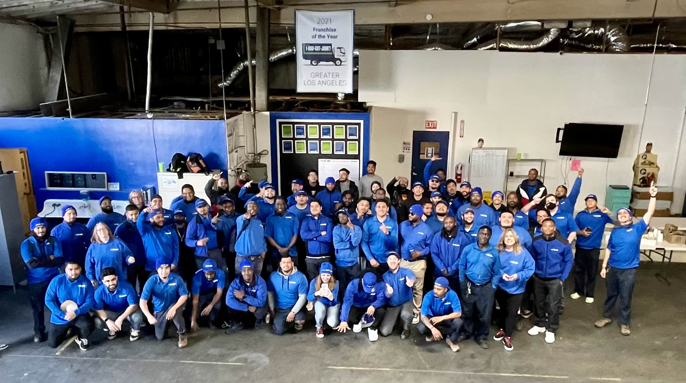

1-800-GOT-JUNK?
Data Transfer
In summer 2024, I was contracted to transfer employee files to a new HR system. Given my history with the company, I was entrusted with handling sensitive information.
I developed bash scripts to automate file management, significantly reducing the time required for the transfer.
Afterward, I created standard operating procedures for accessing and managing files in the new system and implemented security measures to protect the data.

Assistant Recruiting Manager
From 2021 to 2023, I worked in the People Department, where I screened applications, conducted initial phone interviews, and coordinated in-person interviews.
I managed the hiring process for 13x 1-800-GOT-JUNK? franchises, ensuring a consistent and effective recruitment experience.


Truck Team Member
I began my journey at 1-800-GOT-JUNK? as a Truck Team Member in June 2020, at 16 years old.
My role involved managing daily routes, engaging with clients to sell our services, and performing the necessary labor to complete jobs.
Check out the before and after photos above!